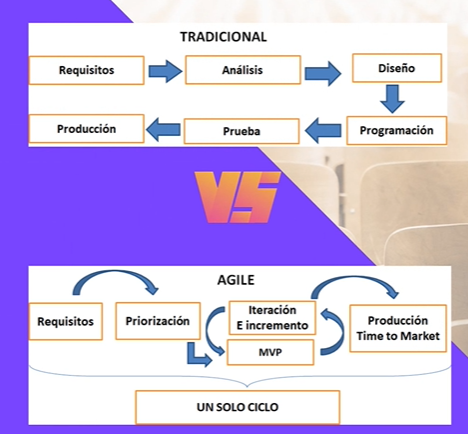
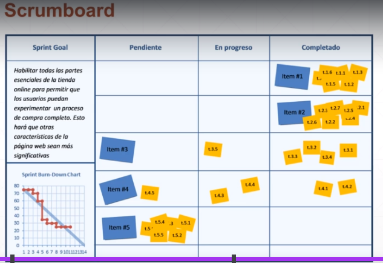
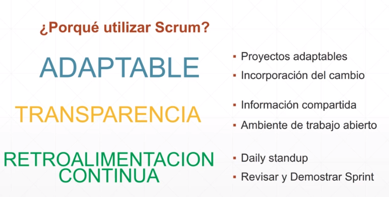
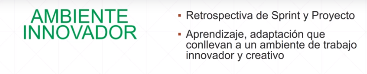
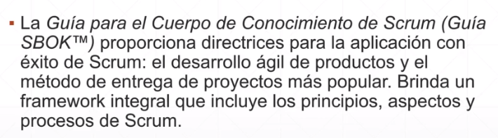
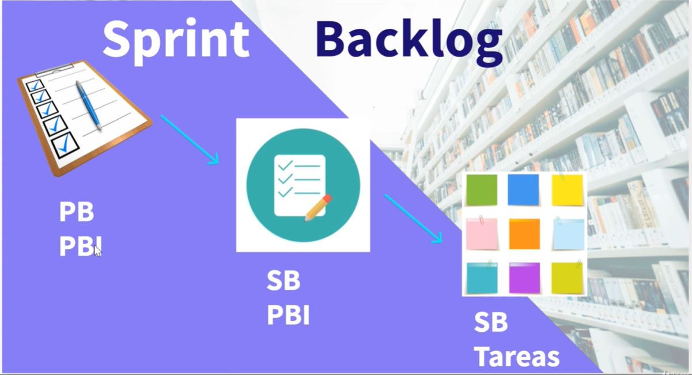
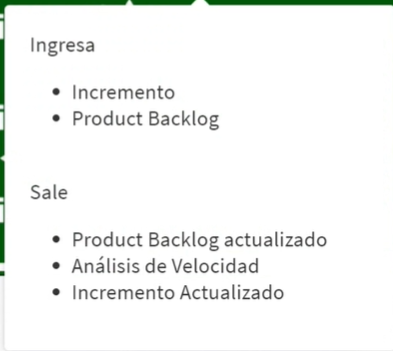

- Scrum
- Introducción a Agile
- Entornos
- Entornos VUCA
- Entornos BANI
- Significado
- El acrónimo BANI, según el creador de la terminología, antropólogo y futurista Jamais Cascio, es “una estructura para articular las situaciones cada vez más comunes en las cuales la simple volatilidad o complejidad son lentes insuficientes para entender lo que está ocurriendo”.
- B
- B de “brittle” (frágil): todos somos susceptibles a catástrofes
- ¡No te desesperes! Aunque la pandemia haya demostrado que las empresas y los seres humanos están apoyados en bases que pueden romperse, quien gana es quien aprende a construir apoyos fuertes, posicionándose de forma clara frente a la sociedad y creando un ambiente de trabajo que estimule la resiliencia.
- Por ejemplo, Netflix defiende una cultura organizacional que promueve la libertad y la autonomía de sus colaboradores. El “vamos a intentar” y el “¿por qué no?” se sobreponen a las presiones limitantes y a un mindset inflexible.
- A
- A de “anxious” (ansioso): luchar contra el miedo
- Con tantos cambios ocurriendo, no es de extrañar que las personas estén sufriendo de depresión y crisis de pánico. Sin embargo, los nuevos tiempos nos llaman a luchar contra el miedo y la coyuntura de incertezas.
- Las marcas más transformadoras respiran innovación, empatía y compromiso social. Además, son consideradas como compañías relevantes para prácticamente todos sus stakeholders.
- N
- N de “nonlinear” (no lineal): aprender a actuar incluso en un escenario desconocido
- Los acontecimientos de hoy muchas veces parecen desconectados y desproporcionados. ¿Quién imaginaba en enero de 2020 que un problema en China podría paralizar todo el mundo? Ciertamente, planeamientos tan detallados y de largo plazo pueden no tener más sentido.
- ¿Cuál sería la solución en este caso? Tener decisiones y comunicaciones ágiles como hizo Ifood al difundir su Fondo de Auxilio a los pequeños restaurantes, incentivando el consumo de barrio. En una de sus publicidades, la marca mostraba todo el ecosistema de su negocio y su forma de actuación creativa que contemplaba, también, acciones solidarias.
- I
- I de “incomprehensible” (incomprensible): no dejarse sobrecargar por el exceso de datos
- Todos nosotros hemos recibido en los últimos tiempos una gran sobrecarga de informaciones que, además de ser diferentes, pueden también ser muchas veces contradictorias.
- El avance tecnológico del mundo actual es tan profundo que en algunos momentos ni siquiera logramos entender, por ejemplo, cómo determinadas cosas y máquinas funcionan. En este sentido, podemos recurrir al entretenimiento indoor de Netflix o incluso a sus redes sociales. La marca utiliza a una persona divertidísima que hace comentarios y publicaciones llenos de ironía y buen humor. Esto es un excelente ingrediente para una empresa que actúa intencionalmente y que buscar mantenerse siempre en los mejores recuerdos del consumidor.
- ¿Cómo aprovechar el entorno BANI?
- Para el creador del concepto de entorno BANI, la fragilidad que personas e instituciones enfrentan podría ser combatida con resiliencia y libertad; la ansiedad podría ser minimizada mediante atención plena y empatía; la respuesta para la no linealidad sería la flexibilidad y una mayor comprensión del contexto y, finalmente, el uso de la transparencia y de la intuición podría aclarar un poco este mundo tan incomprensible.
- Conclusión VUCA - BANI
- Como conclusión, sea en el mundo VUCA o en el entorno BANI, necesitamos revisar todas las estructuras que estén con sus días contados para dar lugar a los modelos y procesos que tienen verdadero sentido. ¡Es hora de abrir oportunidades para acciones que nos lleven, aún más, a cultivar sensibilidad y comprensión por nuestros clientes y demás stakeholders!
- Tradicional Vs. Agile
- 
- MVP
- Minimo producto viable
- Obtiene un feedback mas rapido que en el entorno tradicional
- Resolver los problemas en el momento que surgen
- Resultados
- Fortalezas de Agile
-
- Cliente
- Alguien que nos encarga un trabajo
- Se denomina Stakeholder
- Persona interesada en la creación del producto
- Valida que lo que se este haciendo les guste y les sirve a ellos
- TTM
- ROI
- RTC

- Equipos
- Autoorganizados
- Autogestionados
- Colaborativos
- No se tienen jerarquias
- Documentación
- Intentar que tengan una norma mas intuitiva
-
- Mantenible
- Por un Equipo reducido
- Sintetica
- Resumida, no divagar
- Solo las cosas necesarias para explicar el funcionamiento básico
- Sea respaldo de la información de creación y no de uso
- Concisa
- Necesaria
- Transparencia
-
- visibilidad
- No debe haber material confidencial
- Toda la información debe ser disponible a todos
- Eliminar Condicionamientos Castigo - Recompensa
- Desarrollar una tarea poque soy parte del equipo
- Comunicación
- Todos dentro del equipo somos iguales
- amigos, todos nos tratamos de ayudar
- Puertas Abiertas
- Referirse de igual a igual
- sin barreras
-
- Colaboración
-
- Auto organización
- Tratar de desarrollar
- Las personas elijan que quieren hacer
- "hacer lo que nos gusta"
- Relación con el cliente
- Cliente un miembro mas del equipo
- Desarrollo de mentalidad "Ganar-Ganar"
- Acuerdo
- en el tipo de trabajo que se quiere desarrollar
- Todo el equipo decide como llevar a cabo un trabajo
- Trabajo en equipo
- Colaborativo permanente
- Compromiso
- En los miembros
- Autoelegido y autoimpuesto
- Sinergia
- Conflictos Beneficiosos
- Basados en procesos de mejora continua de manera colaborativa
-
-
- El manifiesto Agil
-
- Enlace
-
- Valores
 Primer valor
Primer valor- Individuos e interacciones sobre procesos y herramientas
-
- Lograr consensos
 Segundo valor
Segundo valor- Software funcionando sobre documentación extensiva
-
- MVP
- Productos mínimos viables
- Producto funcionanado
 Tercer valor
Tercer valor- Colaboración con el cliente sobre negociación contractual
-
- Todos como equipo
- Dar la solución que el cliente necesita
- Los cambios son una oportunidad de mejora
 Cuarto valor
Cuarto valor- Respuesta ante el cambio sobre seguir un plan
-
- Modelos Adaptativos, no predictivos
- Principios
- Nuestra mayor prioridad es satisfacer al cliente mediante la entrega temprana y continua de software con valor.
- Aceptamos que los requisitos cambien, incluso en etapas tardías del desarrollo. Los procesos Ágiles aprovechan el cambio para proporcionar ventaja competitiva al cliente.
- Entregamos software funcional frecuentemente, entre dos semanas y dos meses, con preferencia al periodo de tiempo más corto posible.
- Los responsables de negocio y los desarrolladores trabajamos juntos de forma cotidiana durante todo el proyecto.
 Los proyectos se desarrollan en torno a individuos motivados. Hay que darles el entorno y el apoyo que necesitan, y confiarles la ejecución del trabajo.
Los proyectos se desarrollan en torno a individuos motivados. Hay que darles el entorno y el apoyo que necesitan, y confiarles la ejecución del trabajo. El método más eficiente y efectivo de comunicar información al equipo de desarrollo y entre sus miembros es la conversación cara a cara.
El método más eficiente y efectivo de comunicar información al equipo de desarrollo y entre sus miembros es la conversación cara a cara.- El software funcionando es la medida principal de progreso.
 Los procesos Ágiles promueven el desarrollo sostenible. Los promotores, desarrolladores y usuarios. Debemos ser capaces de mantener un ritmo constante de forma indefinida.
Los procesos Ágiles promueven el desarrollo sostenible. Los promotores, desarrolladores y usuarios. Debemos ser capaces de mantener un ritmo constante de forma indefinida. La atención continua a la excelencia técnica y al buen diseño mejora la Agilidad.
La atención continua a la excelencia técnica y al buen diseño mejora la Agilidad.-
 La simplicidad, o el arte de maximizar la cantidad de trabajo no realizado, es esencial.
La simplicidad, o el arte de maximizar la cantidad de trabajo no realizado, es esencial. - Las mejores arquitecturas, requisitos y diseños emergen de equipos auto-organizados.
- A intervalos regulares el equipo reflexiona sobre cómo ser más efectivo para a continuación ajustar y perfeccionar su comportamiento en consecuencia.
- Enlace
- Primer Backlog
- Trello
- Conceptos
- Básicos
- Que es Scrum
- Sprint
- Épicas, Historias, tareas

- Historia
- Estimación esfuerzo
- Hay que emplear alguna tecnica para estimar el esfuerzo necesario para hacer una tarea
- Roles centrales
- Product Owner
- Scrum Master
- Desarrolladores
- Artefactos
-
- Backlog
- Incremento
- Done
-
- Eventos/Reuniones
- Radiadores Información
-
- Scrumboard
- General
- WIP:
- Work in progress
- Por Sprint
- 
- Burndown
-
- Por que utilizar Scrum
- 
-
-
-
-
- 
-
-
-
-
- Flujo de Scrum
- Guía SBOK
- 
- Enlace
- Fases genericas proyecto
- Flujo de Scrum
- Principios
- Im..
-
- Control Proceso Empirico
-
- Transparencia
- Inspección
- Adaptación
-
- Auto Organización
- Colaboración
- Priorización basada en valor
- Time Boxing
-
- Ej..
-
- Desarrollo Iterativo
- Comparación
- Tradicional
- Scrum
- Aspectos
- Organización
- Justificación del negocio
- Calidad
- Cambio
- Riesgos
- Ciclo Scrum
- Definición
- Es un marco de trabajo liviano que ayuda a las personas, equipo y organizaciones a generar valor a través de soluciones adaptativas para problemas complejos

- Guía
 Teoría
Teoría- Se basa en
- El empirismo
- El empirismo afirma que el conocimiento proviene de la experiencia y de la toma de decisiones con base en lo observado
- El pensamiento Lean
- Reduce el desperdicio
- Se enfoca en lo esencial
- 7 Desperdicios Lean
- 1. Sobreproducción
- 2. Tiempo de espera
- 3. Transporte
- 4. Sobreprocesamiento
- 5. Exceso de inventario
- 6. Movimientos innecesarios
- 7. Defectos
- +1 Desaprovechamiento del talento humano
- Emplea un enfoque iterativo e incremental
- Combina cuatro eventos formales para inspección y adaptación dentro de un evento contenedor, el Sprint
 Pilares Empíricos
Pilares Empíricos- Transparecia
- Inspección
- Adaptación
 Valores Scrum
Valores Scrum- Compromiso
 Foco
Foco Franqueza
Franqueza- Respecto
 Coraje
Coraje
 Artefactos de Scrum
Artefactos de Scrum- Product Backlog
- Compromiso
- Product Goal
- Meta del producto
- Sirve para saber lo que se desea construir o desarrollar
- Usar metodologia SMART para definir el objetivo
- im..
-
- Product Goal
- Tareas épicas
- Requieren varios Sprint
- Historias de usuarios
- Tareas Técnicas
-
- DEEP:
- Detallado
- suficientemente para saber lo que se debe hacer
- Estimado
- tiempo, puntos
- Emergente
- adaptable
- Priorizado
- de manera permanente
- Lo de mayor valor primero
- Dinamico
- cambiante en el tiempo
- Creando
- PBI: Product Backlog Item
- Sprint Backlog
- Compromiso
- Sprint Goal
- Objetivo / meta del Sprint
- Usar metodologia SMART para definir el objetivo
- im..
- Aporta a Product Goal
- im..
- Ciclo de trabajo
- Conjunto parcial de tareas que se desarrollaran durante la duración de un Sprint
- Creando
- 
- PB: Product Backlog
- PBI: Product Backlog Item
- SB: Sprint Backlog
- Es responsabilidad de los desarrolladores escoger los PBI a Incluir y a dividir
- Tareas
- Las plantea el desarrollador
- El desarrollador
- estima el tiempo
- escoge las tareas que realizara
- El Incremento
- Compromiso
- DoD
- Definition of Done
- Definición de terminado
- im..
- Cada "palito" representa un Sprint terminado
- Caracteristicas
- PG: Product Goal
 Eventos Scrum
Eventos Scrum- im..
- Timeboxing
-
- T y R: Tiempos y Recursos
-
- Sprint: Es el contenedor
- Sprint Planning
- Timebox: 8 hours for a monthly Sprint. For shorter Sprints it is usually shorter.
- Daily Scrums
- Timebox: 15 minutes
- Sprint Review
- Timebox: 4 hours for a monthly Sprint. For shorter Sprints it is usually shorter.
- Sprint Retrospective
- Timebox: 3 hours or less for a one month sprint
- Durante el Sprint
- No se realizan cambios que pongan em peligro el Objetivo del Sprint
- La calidad no disminuye
- El product Backlog se refina según sea necesario
- El alcance se puede aclarar y re-negociar con el Product Owner a medida que se aprende mas
- Prácticas para pronosticar el progreso
- burn-downs
- burn-ups
- cumulative flows
- 1er. evento
- Sprint
- 1..
- 2..
- 2do. Evento
- La Planning
- 1
- 2
- 3er. Evento
- Daily Scrum
- 1

- 1
- 2
- 2
- 4to evento
- Sprint Review
- 1
-
- 1
- 2
-
- 2
-
- 1
- 2
- 
-
- 5to. evento
- Sprint Retrospective
- 1
-
- 1
- 2
-
- 2
-
- 1
-
- Kaizen:
- La palabra kaizen, etimológicamente, se refiere a cualquier cambio a mejor, ya sea grande o pequeño, puntual o continuo, de forma similar a la palabra «mejora» en español.
- Enlace
-
- 2
-
- SM:
- Scrum Master
- OODA
- Ciclo: Orientada, observar, decidir, actuar
-
-
 Roles de Scrum
Roles de Scrum- Roles
- Equipo Central
- tres roles
-
- Scrum Team
-
- stakeholders
- 1..
- 2..
-
- Relacion entre roles
- 1..
-
- ST transparencia Stkh
- Stkh Respeto ST
- Stkh Colaboracion PO
- Stkh Compromiso SM
- Scrum Team -> Foco
-
 Scrum Master
Scrum Master- 0..
-
- Interactua con:
- 1..
- 2..
- Sirve al Scrum Team
- Guia a los miembros del equipo en ser autogesionados y multifuncionales
- Ayuda al Scrum Team a enfocarse en crear Increments de alto valor que cumplan con la Definición de Terminado
- Procura la eliminación de impedimientos para el progreso del Scrum Team
- Asegurarse de que todos los eventos de Scrum se lleven a cabo y sean positivos, productivos y se mantengan dentro de los límites de tiempo recomendados en la guía Scrum
- Sirve al Product Owner
- Ayuda a encontrar técnicas para una definición efectiva de Objetivos del Producto y la gestión del Product Backlog
- Ayuda al Scrum Team a comprender la necesidad de tener elementos del Product Backlog claros y concisos
- Ayuda a establecer una planificación empírica de productos para un entorno complejo
- Facilitar la colaboración de los interesados según se solicite o necesite
- Sirve a la organización
- Liderar, capacitar y guiar a la organización en su adopción de Scrum
- Planificar y asesorar implementaciones de Scrum dentro de la organización
- Ayudar a los empleados y los interesados a comprender y aplicar un enfoque empírico para el trabajo complejo
- Eliminar las barreras entre los interesados y los Scrum Teams
- Desarrolladores
- Equipo Scrum
- 1..
- 2..
- Perfiles en "T"
- 1..
- Crear un plan para el Sprint, El Sprint Backlog
- Inculcar calidad al adherirse a una Definición de Terminado
- Adaptar su plan cada día hacia el Objetivo
- Responsabilizarse mutuamente como profesionales
- Product Owner
- Product Owner
- 1..
- Responsabilidades
- Ser Eficiente
-
- 1..
-
- Chief Product Owner
- Jefe de Producto
-
-
- Gestión efectiva del product Backlog
- Desarrollar y comunicar explícitamente el objetivo del producto
- Crear y comunicar claramente los elementos del Product Backlog
- Ordenar los elementos del Product Backlog
- Asegurar de que el Product Backlog sea transparente, visible y se entienda
 Ubicacion fisica
Ubicacion fisica
-